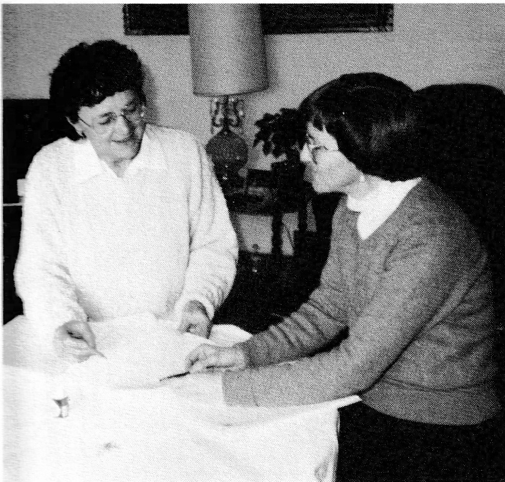

Dedication
This book is dedicated to the descendants of Henri Alain and Joseph Lessard. May they appreciate their roots and strive to uphold the values of faith and family which have long been cherished by our ancestors.
Introduction
This is a story on the histories of two families, the Alains and Lessards, and is to be presented to Louis and Clara on the occasion of their 50th Wedding Anniversary.
It was written and compiled by daughters, Marlyne and Maxine, researched by them along with their sister, Marcella, and cousin, Jeannine Alain, with many members of the families contributing their stories.
The book tells of many of the hardships and much of the humor, ensuring that much of those early years will not be forgotten by the younger generations.
I have known both families all my life and have kept in close touch with them over the years. It is, therefore, indeed a privilege to have been chosen to write this introduction.
Maurice Veillard

Although Maxine Prentice and Marlyne Reindl have prepared the manuscript, this book has been the joint project of the eight children — and their spouses — of Louis and Clara Alain: Marlyne and Adolf Reindl; Maxine and Elliott Prentice; Marcella and Richard Sevigny; Bruce and Gaila Alain; Bernadette and Don Adrian; Rachelle and Dana Toews; Michelle and Ian Pepper; Joe and Bonnie Alain for without whose help, encouragement and financial support this book would not have been possible.